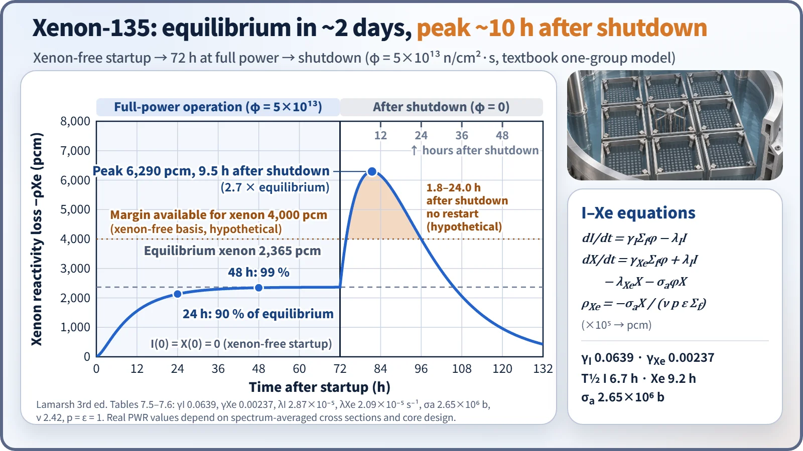
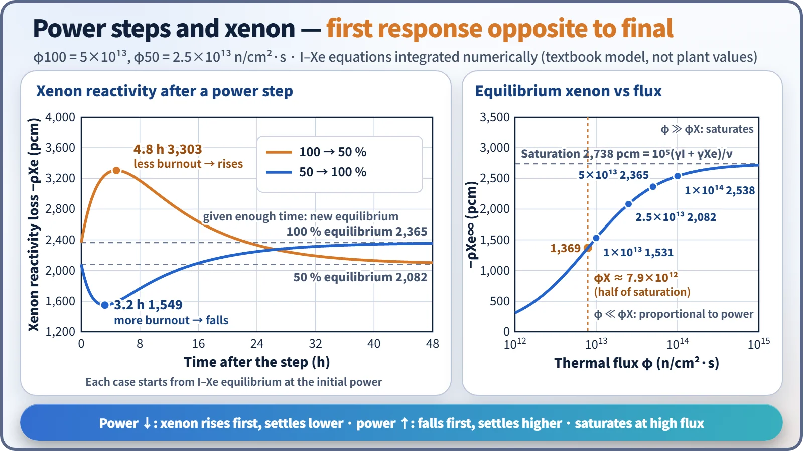
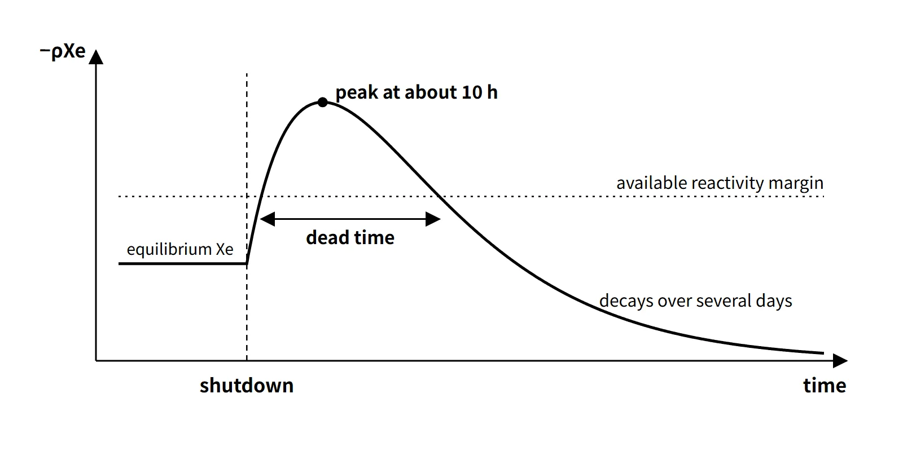

Reactor Physics & Kinetics · C-RX-008
Xenon-135 Poisoning — Equilibrium Xenon, the Post-Shutdown Peak and Behavior After Power Changes
The I–Xe equations, saturation of equilibrium xenon at high flux, the post-shutdown peak and dead time, and the opposite short- and long-term responses to power changes.
Xenon-135 poisoning is the negative reactivity caused by the fission product ¹³⁵Xe (thermal absorption cross section about 2.65×10⁶ b), formed mainly by the decay of ¹³⁵I, which absorbs thermal neutrons and lowers the thermal utilization factor f; because production and removal (decay and burnout) are out of step in time, it produces reactivity changes after power changes and for tens of hours after shutdown.
Principle and mechanism
Production and removal paths
The decay chain is ¹³⁵Te —β⁻ (about 11 s)→ ¹³⁵I —β⁻ (6.7 h)→ ¹³⁵Xe —β⁻ (9.2 h)→ ¹³⁵Cs. ¹³⁵Te decays almost at once, so ¹³⁵I is treated as produced directly in fission. For thermal fission of ²³⁵U the effective yields are γI = 0.0639 and γXe = 0.00237 (Lamarsh, 3rd ed., Table 7.5), so about 96 % of ¹³⁵Xe comes from ¹³⁵I decay. Xenon is removed by two paths, its own β decay (λXe) and neutron absorption (σaXe φ, "burnout"); the ¹³⁶Xe formed by absorption is practically not a poison.
- dI/dt = γI Σf φ − λI I
- dX/dt = γXe Σf φ + λI I − λXe X − σaXe φ X
- Reactivity (leakage neglected, change in f only): ρXe = −σaXe X/(ν p ε Σf)
The constants are λI = 2.87×10⁻⁵ s⁻¹ and λXe = 2.09×10⁻⁵ s⁻¹ (Lamarsh Table 7.6) and σaXe = 2.65×10⁶ b (2,200 m/s). At a full-power flux of φ = 5×10¹³ n/cm²·s the burnout term σφ = 1.3×10⁻⁴ s⁻¹ is about six times the decay constant, so during operation xenon is removed mainly by burnout, and after shutdown only by decay. This asymmetry explains all of the behavior below.
Equilibrium xenon is not proportional to power
Setting the time derivatives to zero gives the equilibrium values:
- I∞ = γI Σf φ/λI, X∞ = (γI + γXe) Σf φ/(λXe + σaXe φ)
- ρ∞ = −[(γI + γXe)/(ν p ε)] × φ/(φX + φ), with φX = λXe/σaXe ≈ 7.9×10¹² n/cm²·s
For φ ≪ φX the equilibrium value is proportional to power; at φ = φX it is half of saturation; for φ ≫ φX it approaches the maximum −(γI + γXe)/ν = −0.066/2.42 ≈ −2.73 % (about −2,740 pcm). In a power PWR φ is several times φX, so the reactor sits in the saturated region, and even at 50 % power equilibrium xenon is about 88 % of its 100 % value (table below, values calculated with the textbook one-group model).
| Thermal flux φ | 1×10¹³ | 2.5×10¹³ | 5×10¹³ | 1×10¹⁴ |
|---|---|---|---|---|
| Equilibrium ρ (pcm) | −1,531 | −2,082 | −2,365 | −2,538 |
| Time of post-shutdown peak | 5.7 h | — | 9.5 h | 10.3 h |
| Post-shutdown peak ρ (pcm) | −1,861 | — | −6,296 | −11,550 |
Starting up from a xenon-free core, production has to pass through ¹³⁵I (6.7 h), so equilibrium takes time: at φ = 5×10¹³ the xenon reaches 90 % of equilibrium after 24 hours and 99 % after 48 hours, so equilibrium is reached in about 40–50 hours.
The xenon peak after shutdown
At shutdown φ = 0 and burnout stops. The remaining ¹³⁵I keeps decaying into xenon, and since λI > λXe, production exceeds removal for a while.
- X(t) = X0 e^(−λXe t) + [λI I0/(λI − λXe)] (e^(−λXe t) − e^(−λI t))
- Time of the peak: tmax = ln{(λI/λXe) · λI I0/[λI I0 + (λI − λXe) X0]}/(λI − λXe)
The peak comes at about 10 hours, and the higher the pre-shutdown flux, the higher and later it is. At φ = 5×10¹³ the peak occurs 9.5 hours after shutdown at about 2.7 times the equilibrium value; xenon falls below the equilibrium value about 34 hours after shutdown and then keeps decreasing over several days (48 hours after shutdown it is still about 40 % of equilibrium).

If, during this peak, the xenon reactivity exceeds the available reactivity margin, the reactor cannot be restarted (the dead time, or restart-impossible time). For example, if the margin available to compensate xenon is 4,000 pcm on a xenon-free basis (hypothetical), the model above gives a dead time from about 1.8 to 24.0 hours after shutdown.
Power steps: the immediate and final responses go in opposite directions
| Case | Immediately after (a few hours) | Extreme | Final (about 2 days, 48 h) |
|---|---|---|---|
| 100 → 50 % | Less burnout → xenon rises | −3,303 pcm after 4.8 h | New equilibrium −2,082 pcm (lower) |
| 50 → 100 % | More burnout → xenon falls | −1,549 pcm after 3.2 h | New equilibrium −2,365 pcm (higher) |
The immediate direction is set by the change in the burnout term, the final direction by the difference between equilibrium values (calculated for φ100 = 5×10¹³).

What it means in a plant
- Compensation in operation: for a restart after shutdown, the timing of the xenon peak and decay is predicted to calculate the estimated critical boron concentration (ECC).
- End-of-cycle constraint: at end of cycle the boron concentration is low and the dilution margin small, so the xenon peak cannot be overridden and a dead time is likely.
- Load following: when power is reduced, xenon first increases and hinders the return to power.
- Safety analysis: shutdown-margin and excess-reactivity evaluations state the xenon condition (equilibrium, xenon-free, peak) explicitly.
Regulatory and design criteria
The criteria below are examples from the United States (US NRC).
| Basis | Key point |
|---|---|
| 10 CFR 50 App. A GDC 26 | Two independent reactivity control systems of different design principles; the second controls the rate of reactivity change from planned normal power changes (including xenon burnout) |
| GDC 12 | Power oscillations must be prevented or reliably detected and suppressed (basis for xenon oscillations) |
| NRC SRP 4.3 Nuclear Design | Evaluation of reactivity control capability and xenon spatial stability |
| Plant technical specifications (T/S) | Xenon effects managed indirectly through the shutdown-margin and axial-shape LCOs |
Easily confused pairs
| ¹³⁵Xe | ¹⁴⁹Sm | |
|---|---|---|
| Production | ¹³⁵I (6.7 h) decay + direct | ¹⁴⁹Pm (53 h) decay |
| σa (2,200 m/s) | 2.65×10⁶ b | 4.1×10⁴ b |
| Removal | Decay (9.2 h) + burnout | Burnout only (stable nuclide) |
| Equilibrium reactivity | Power-dependent, at most about −2.7 % | Independent of power, about −0.44 % |
| After shutdown | Peaks at about 10 h, then disappears | Rises and stays |
Key points at a glance
- Definition: thermal-neutron absorption by the fission product ¹³⁵Xe (σa ≈ 2.65×10⁶ b) lowers f → negative reactivity.
- Production: about 96 % from decay of ¹³⁵I (T½ 6.7 h) + direct yield γXe.
- Removal: decay (T½ 9.2 h) + neutron absorption (burnout, dominant at full power).
- Equilibrium xenon: ρ∞ = −[(γI + γXe)/ν]·φ/(φX + φ), φX ≈ 7.9×10¹² → saturates at high power, at most about −2.7 %.
- Time to equilibrium: about 40–50 h after a xenon-free startup.
- After shutdown: burnout stops while ¹³⁵I keeps decaying → peak at about 10 h, then decrease over several days.
- Dead time: the interval in which xenon reactivity exceeds the available margin; a problem at end of cycle.
- Power changes: a decrease gives a temporary rise and then a lower equilibrium; an increase gives a temporary fall and then a higher equilibrium.
- Countermeasures: compensation with boron and control rods; monitoring of axial xenon oscillations (ASI).

Worked example — equilibrium xenon reactivity for 50 → 100 % power
Given (constants as stated, which differ slightly from the textbook values above): φ50 = 2.5×10¹³, φ100 = 5.0×10¹³, γI 0.06, γXe 0.002, Σf 0.18 cm⁻¹, Σa,F 0.58, Σa,M 0.10 cm⁻¹, σaXe 2.7×10⁶ b, T½ 9.2 h. The other five factors are 1, so k = f.
- λXe = 0.693/(9.2×3,600) = 2.093×10⁻⁵ s⁻¹, φX = λXe/σ = 7.75×10¹²
- ΣaXe = (γI + γXe)Σf φ/(φX + φ) → 50 %: 0.008519 cm⁻¹, 100 %: 0.009662 cm⁻¹
- f50 = 0.58/0.688519 = 0.84239, f100 = 0.58/0.689662 = 0.84099
- Δρ = 1/k50 − 1/k100 = (0.688519 − 0.689662)/0.58 = −1.97×10⁻³ ≈ −197 pcm
With the Δk/k approximation the result is about −166 pcm, so it matters which definition of reactivity change is used. That doubling the power changes the equilibrium xenon reactivity this little is the result of saturation.